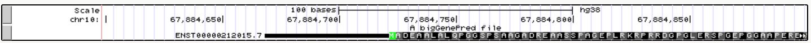
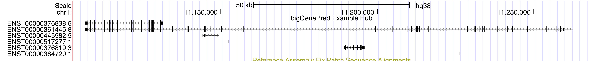

The bigGenePred format stores positional annotations for collections of exons in a compressed format, similar to how BED files are compressed into bigBeds. The bigGenePred format is a superset of the genePred text-based format supported using the bigBed format, so it can be efficiently accessed over a network. The bigGenePred format includes 8 additional fields that contain details about coding frames, annotation status, and other gene-specific information. This is commonly used in the Browser to display start codons, stop codons, and amino acid translations.
Before compression, bigGenePred files can be described as bed12+8 files. bigGenePred
files can be created using the program bedToBigBed, run with the -as
option to pull in a special
autoSql (.as) file that defines the extra fields of the bigGenePred.
Much like bigBed, bigGenePred files are in an indexed binary format. The advantage of using a binary format is that only the portions of the file needed to display a particular region are read, allowing for much faster performance when working with large data sets. As with all big* files, bigGenePred files must be hosted on a web-accessible server (http, https, or ftp) to be displayed. For more information on finding a hosting location for your bigGenePred files, please see the hosting section of the Track Hub Help documentation.
The following autoSql definition specifies bigGenePred gene prediction files. This
definition, contained in the file bigGenePred.as,
is pulled in when the bedToBigBed utility is run with the
-as=bigGenePred.as option.
table bigGenePred
"bigGenePred gene models"
(
string chrom; "Reference sequence chromosome or scaffold"
uint chromStart; "Start position in chromosome"
uint chromEnd; "End position in chromosome"
string name; "Name or ID of item, ideally both human-readable and unique"
uint score; "Score (0-1000)"
char[1] strand; "+ or - for strand"
uint thickStart; "Start of where display should be thick (start codon)"
uint thickEnd; "End of where display should be thick (stop codon)"
uint reserved; "RGB value (use R,G,B string in input file)"
int blockCount; "Number of blocks"
int[blockCount] blockSizes; "Comma separated list of block sizes"
int[blockCount] chromStarts;"Start positions relative to chromStart"
string name2; "Alternative/human readable name"
string cdsStartStat; "Status of CDS start annotation (none, unknown, incomplete, or complete)"
string cdsEndStat; "Status of CDS end annotation (none, unknown, incomplete, or complete)"
int[blockCount] exonFrames; "Reading frame of the start of the CDS region of the exon, in the direction of transcription (0,1,2), or -1 if there is no CDS region."
string type; "Transcript type"
string geneName; "Primary identifier for gene"
string geneName2; "Alternative/human-readable gene name"
string geneType; "Gene type"
)
The field exonFrames is a comma-separated list of the numbers
with the possible values 0, 1, 2 or -1, one per exon, in order of transcription.
This order means that the first value for a transcript on the minus (-) strand is
the exon on the right of the screen on the Genome Browser.
A value of zero means that the first codon of the exon starts at the first nucleotide of the
exon. A value of one means that the first codon starts after the first
nucleotide and a value of two means that it starts after the second nucleotide.
UTRs are non-coding and their exonFrame value is -1.
The fields cdsStartStat and cdsEndStat have the following values: 'none' = none, 'unk' = unknown, 'incmpl' = incomplete, and 'cmpl' = complete. The values, however, are not used for our display and cannot be used to identify coding or non-coding genes. For most purposes, to get more information about a transcript, other tables will need to be used. For instance, in the case of hg38, the tables named wgEncodeGencodeAttrsVxx, where xx is the Gencode Version number. See this coding/non-coding genes FAQ for more information.
The following bed12+8 is an example of a pre-bigGenePred text file .
Step 1.
Format your pre-bigGenePred file. The first 12 fields of pre-bigGenePred files are described by the
BED file format. Your file must
also contain the 8 extra fields described in the autoSql file definition
shown above: name2, cdsStartStat, cdsEndStat, exonFrames, type, geneName, geneName2,
geneType. For example, you can use this bed12+8 input file,
bigGenePred.txt. Your pre-bigGenePred file must be sorted
first on the chrom field, and secondarily on the chromStart field. You
can use the UNIX sort command to do this:
sort -k1,1 -k2,2n unsorted.bed > input.bed
Step 2.
Download the bedToBigBed program from the
binary utilities directory.
Step 3.
Download the chrom.sizes file for your assembly from
our downloads page (click on "Full
data set" for your organism). For example, the hg38.chrom.sizes file for the hg38
database is located at
http://hgdownload.gi.ucsc.edu/goldenPath/hg38/bigZips/hg38.chrom.sizes.
Alternatively, you can use the fetchChromSizes script from the
utilities directory.
Step 4.
Create the bigGenePred file from your pre-bigGenePred file using the bedToBigBed
utility command:
bedToBigBed -as=bigGenePred.as -type=bed12+8 bigGenePred.txt chrom.sizes myBigGenePred.bbStep 5. Move the newly created bigGenePred file (myBigGenePred.bb) to a web-accessible http, https, or ftp location. See hosting section if necessary.
Step 6. Construct a custom track using a single track line. Any of the track attributes will be available for use on bigBed tracks. The basic version of the track line will look something like this:
track type=bigGenePred name="My Big GenePred" description="A Gene Set Built from Data from My Lab" bigDataUrl=http://myorg.edu/mylab/myBigGenePred.bbStep 7. Paste this custom track line into the text box on the custom track page with your modified URL. Click and your track should load successfully. Then click to be taken to the Browser window with your custom track at the top. Note that there might not be data at all positions.
Create a bigGenePred custom track using the bigGenePred file located on the UCSC Genome Browser http server, bigGenePred.bb. This file contains data for the hg38 assembly.
track type=bigGenePred name="bigGenePred Example One" description="A bigGenePred file" bigDataUrl=http://genome.ucsc.edu/goldenPath/help/examples/bigGenePred.bbCustom tracks can also be loaded via one URL line. The link below loads the same bigGenePred track and sets additional parameters in the URL:
http://genome.ucsc.edu/cgi-bin/hgTracks?db=hg38&hgct_customText=track%20type=bigGenePred%20bigDataUrl=http://genome.ucsc.edu/goldenPath/help/examples/bigGenePred.bbAfter this example bigGenePred track is loaded in the Genome Browser, click on the track to change display from dense to pack, then click on a gene in the Browser's track display to view the gene details page. Note that the page offers links to translated protein, predicted mRNA, and genomic sequence.
In this example, you will configure the bigGenePred track loaded in Example #1 to display amino acids and codon numbering:
chr9:133,255,650-133,255,700, and note that the track now displays amino acids.
Alternatively, you can also add a parameter in the custom track line,
baseColorDefault=genomicCodons,
to set amino acids and codon numbering to display by default:
browser position chr10:67,884,600-67,884,900
track type=bigGenePred baseColorDefault=genomicCodons name="bigGenePred Example Two" description="A bigGenePred file" visibility=pack bigDataUrl=http://genome.ucsc.edu/goldenPath/help/examples/bigGenePred.bb Paste the above into the hg38 custom track page to view an example of bigGenePred amino acid display at the beginning of the SIRT1 gene on chromosome 10.

In this example, you will create your own bigGenePred file from an existing pre-bigGenePred input file, a bed12+8 file.
bedToBigBed
utility (Step 2, in the Creating a bigGenePred section above).bedToBigBed utility to create the bigGenePred output file (step 4,
above):
bedToBigBed -type=bed12+8 -tab -as=bigGenePred.as bigGenePred.txt hg38.chrom.sizes bigGenePred.bbIn this example, you will convert a GTF file to bigGenePred using command line utilities.
You will need gtfToGenePred, genePredTobigGenePred,
and bedToBigBed. If you would like to convert a GFF file to bigGenePred, you will use
gff3ToGenePred in place of the gtfToGenePred. You can download utilities from the
utilities directory.
wget command. Skip this step if you already have a GTF
or GFF file.
wget http://genome.ucsc.edu/goldenPath/help/examples/bigGenePredExample4.gtfgtfToGenePred command.
gtfToGenePred -genePredExt bigGenePredExample4.gtf example4.genePredgff3ToGenePred command.
gff3ToGenePred yourFile.gff example4.genePred genePredToBigGenePred example4.genePred bigGenePredEx4.txtwget https://genome.ucsc.edu/goldenPath/help/examples/bigGenePred.asbedToBigBed -type=bed12+8 -tab -as=bigGenePred.as bigGenePredEx4.txt http://hgdownload.gi.ucsc.edu/goldenPath/hg38/bigZips/hg38.chrom.sizes bigGenePredEx4.bbhttp://genome.ucsc.edu/cgi-bin/hgTracks?db=hg38&position=chr19:44905790-44909388&hgct_customText=track%20type=bigGenePred%20bigDataUrl=http://genome.ucsc.edu/goldenPath/help/examples/bigGenePredEx4.bbYou can also add your data in the custom track management page. This allows you to set position, configuration options, and write a more complete desciption. If you want to see codons, you can right click, then click configure codon view or set this options using
baseColorDefault=genomicCodons as is done below.
browser position chr19:44905790-44909388
track type=bigGenePred baseColorDefault=genomicCodons name="bigGenePred Example Four" description="Ex4:BigGenePred Made from GTF" visibility=pack bigDataUrl=http://genome.ucsc.edu/goldenPath/help/examples/bigGenePredEx4.bb
In this example, you will set up a Track Hub that displays bigGenePred data and uses one of the bigGenePred-specific settings to display gene codons. You can see a pre-built version of this hub by clicking this link.
baseColorDefault genomicCodons). Visit the
trackDb help page for
more information about trackDb settings.
If you would like to share your bigGenePred data track with a colleague, learn how to create a URL link to your data by looking at Example #6 on the custom track help page.
Because the bigGenePred files are an extension of bigBed files, which are indexed binary files, it can be difficult to extract data from them. UCSC has developed the following programs to assist in working with bigBed formats, available from the binary utilities directory.
bigBedToBed — converts a bigBed file to ASCII BED format.bigBedSummary — extracts summary information from a bigBed
file.bigBedInfo — prints out information about a bigBed file.As with all UCSC Genome Browser programs, simply type the program name (with no parameters) at the command line to view the usage statement.
If you encounter an error when you run the bedToBigBed program, check your input
file for data coordinates that extend past the end of the chromosome. If these are
present, run the bedClip program
(available here) to remove the problematic
row(s) before running the bedToBigBed program.